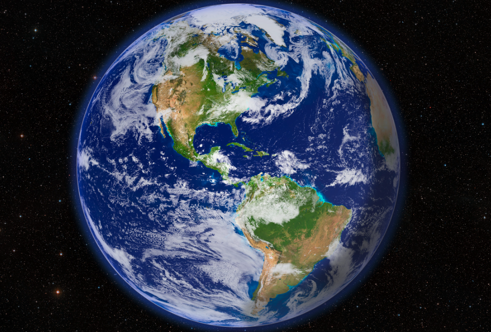

Earth
Earth is the third planet from the Sun and the only known planet to support life. It has a diverse environment with oceans, land, and a breathable atmosphere.
About 71% of Earth`s surface is covered by water, and it has one natural satellite, the Moon. Earth`s atmosphere protects life by blocking harmful radiation and helping regulate temperature.

Facts About Earth
- Earth is the only known planet that supports life.
- About 71% of Earth`s surface is covered by water.
- Earth has one moon.
- It takes 24 hours for Earth to rotate once.
- Earth`s atmosphere is made mostly of nitrogen and oxygen.